This device cannot display Java animations. The above is a substitute static image
1. Zero
The first applet shows a graph on the left of a constant integrand equal to 0. Moving the x slider shows that no area gets accumulated. Alternatively, use the choice box to select "Slope" to examine this example (and other examples) from the slope perspective. From the slope point of view, the slope is always zero, so the antiderivative must be a horizontal line. Move the C slider to see other members of this family. Using the indefinite integral notation, we say that
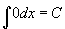
.
2. A constant
Select the second example, showing a constant integrand equal to 2. Moving the x slider shows that area gets added linearly. From the slope perspective, the slope is constant, which we know is a line. So
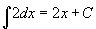
More generally:
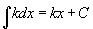
where
k is a constant. In this applet, positive area is shown as green, negative area as red.
3. A line
Select the third example, showing a line as the integrand. Move the x slider to see area accumulated. In particular, set x = 1. What is the value of the antiderivative? Since it isn't 1, the antiderivative can't just be x², but rather must be
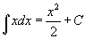
You can check this by finding the derivative of the right-hand side of this equation, and you do get just
x.
4. A Parabola
Select the fourth example, showing a parabola. Again, set x = 1 and note the value of the antiderivative. Since it isn't 1, the antiderivative can't just be x³, but rather must be
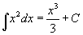
Check this by finding the derivative of the right-hand side of this equation, and you do get just
x².
5. A cubic
Select the fifth example, showing a cubic. Can you figure out what the antiderivative is? You may have noticed the pattern, which gives us a general formula for the antiderivative of a power function:
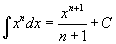
Try finding the derivative of the right-hand side, to see that you do get the integrand.
6. A hyperbola
Select the sixth example, showing a hyperbola 1/x (or x-1). The power function rule we just looked at doesn't work in this case, because then the denominator on the right-hand side would be zero, and dividing by zero yields an undefined result. Move the x slider to see that the slope of the graphed antiderivative does match the value of the integrand (this example is best viewed from the slope perspective). What function has a derivative of 1/x? You may recall that it is ln(x). But, this example is slightly different because 1/x can take on both positive and negative values. Hence the rule is
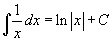
where the absolute value gives us the proper curve on the negative side.
If you look at things from the area perspective and move the x slider, you may notice that the area seems to start and end at 1 instead of 0. Because the integrand is not defined at x = 0, we can't use an accumulation function from 0 to graph the antiderivative. Instead, we use an accumulation function with a lower limit of 1 (and the software handles a negative x differently, too). Right now, we don't know how to evaluate a definite integral on an interval where the integrand goes to infinity; we will revisit this topic later. The software uses numerical methods to compute the antiderivate graph as an accumulation function and it, too, has troubles with infinity.
7. An exponential function
Select the seventh example, showing an exponential function. Since we know that the derivative of ex is just ex, we might guess that the antiderivative of ex is ex. While the graph looks like it has the right shape, it seems shifted down. This is because the antiderivative is graphed as the accumulation function:
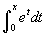
which is zero for
x = 0. So our accumulation function gives us an antiderivative of e
x - 1. Since we then add a constant
C to this result, and -1 is also a constant, we can combine the -1 and the
C into just a
C, since this is an arbitrary constant. So the rule becomes:
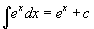
8. Cosine function
Select the eigth example, showing cosine. The antiderivative looks like sine, and since we know that the derivative of sin(x) is cos(x), the rule for the antiderivative is:
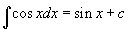
9. Sine function
Select the ninth example, showing sine (note that you may have to scroll in the example menu box to find the ninth example). The antiderivative looks like cosine, but upside down and shifted up. Since we know that the derivative of cos(x) is -sin(x), the derivative of -cos(x) is sin(x), so we would expect that the antiderivative of sine to look like -cosine. The shift comes from the graphing software using the accumulation function
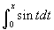
so again, the graphed antiderivative must cross the
x axis at the origin. As with the exponential function example, we ignore this +1 shift, since it is just a constant added on. So we write the rule as:
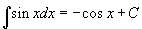
Explore
You can try entering your own functions for the integrand, particularly ones that are the derivative of some known function. You can try the sum of two functions, and you will find that the definite integral property of sums and differences holds for general antiderivatives, too. In other words:
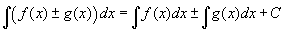
If you play around with products, quotients, and compositions of functions, you'll discover that, just like derivatives, we need more complex rules. Be careful of functions with vertical asymptotes, like sec(
x)tan(
x) (where we know that the derivative of sec(
x) is this function, so this function's antiderivative must be sec(
x) +
C.
(If you try this, you'll get a good graph as long as you don't cross one of the asymptotes. Once the graph crosses an asymptote, the graphing software gets confused, because it has a hard time evaluating the accumulation function when that function goes to infinity).
Other 'Constructing Antiderivatives' topics
(C) 2011 Copyright Math Open Reference.
All rights reserved